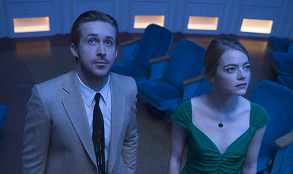

Ла-Ла Ленд

Как мимолётная встреча, завершившаяся небольшим конфликтом, может свести двух людей? Так произошло с малоизвестной актрисой Мией Долан и джазовым музыкантом Себастьяном Уайлдером, начавшим выяснять отношения прямо в пробке на автомобильной трассе. А спустя пару месяцев они вновь встретились, и поняли, что небезразличны друг другу
Путь домой
Когда Лукас прогуливался по улице вместе со своей подругой, то стал свидетелем того, как фурманщики отлавливали стаю маленьких щенков, и не заметили собаку, сидящую в самом углу. Сердобольный парень принял решение забрать её к себе, и назвал Беллой.
Искупление
Действие фильма разворачивается в 30-х годах прошлого столетия в доме одной богатой семьи, где жила юная писательница Бриони. Однажды, после приезда гостей, она стала свидетельницей милой беседы между старшей сестрой и сыном одного из слуг по имени Робби, к которому испытывала сильные чувства, и не смогла сдержать своего гнева.
Зависнуть в Палм стрит
Главный герой – парень по имени Найлз, оказавшийся приглашённым на свадьбу своих друзей. И пока остальные суетливо готовятся к церемонии, он с удовольствием проводит время в бассейне с коктейлем в руках, а вечером выступает с длинной речью перед гостями, чем особенно трогает одну из подружек невесты.
Круэлла
Ещё будучи маленьким ребёнком Эстелла поняла, что сильно отличается от остальных детей своей гениальностью и особенным взглядом на многие вещи, а мама всегда старалась убедить дочь в обратном, и просила лишний раз не выделяться из толпы. Всё изменилось после вечера, когда девочка осталась сиротой, из-за чего была вынуждена связаться с местными беспризорниками и начать обворовывать людей, дабы выжить в этом жестоком мире.